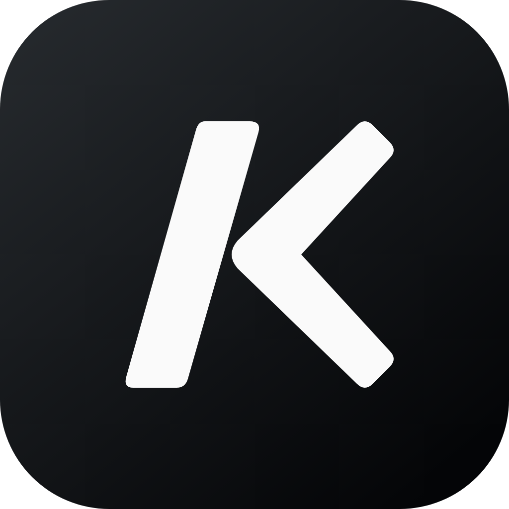

Shape the work
Work through the requirements with an agent, refine the scope, and approve a plan before implementation begins.

__PRODUCT_NAME__Software engineering, orchestrated.
__PRODUCT_NAME__ orchestrates software engineering workflows through agents. Planning, implementation, review, and delivery stay connected—with you in control of the decisions that matter.
I found the restore race. I’m keeping the selected session visible while the backend snapshot catches up.
01 / One connected workflow
Software work doesn’t end when an agent answers. Missions connect requirements, tickets, implementation, and review in one workflow. Agents carry out the work; __PRODUCT_NAME__ coordinates its progress and handoffs, with artifacts you can inspect along the way.
Work through the requirements with an agent, refine the scope, and approve a plan before implementation begins.
Let the workflow coordinate execution and handoffs. Context, progress, and artifacts stay with the work as it moves forward.
Inspect what agents produce, guide the next step, and make the decisions that need your judgment. Orchestrated doesn’t mean unattended.
02 / Start where you are
Talk through an idea in Quick Chat, pick up a GitHub issue, or jump into an existing repository. Use a Mission for a multi-stage change or work directly with an agent for a focused task.
Continue with existing context or create an isolated worktree. Parallel work gets its own space without losing the path back.
Continue in the current folder and branch with its existing context.
Create a dedicated branch and worktree so this task can run independently.
03 / Review through delivery
A first pass isn’t the finish line. Inspect findings, send selected issues back for fixes, and review again. Keep the path from implementation to a pull request or merge in the same workspace.
const totalPages = computed(() =>
- Math.ceil(items.value.length / pageSize)
+ Math.max(1, Math.ceil(totalItems.value / pageSize))
);
+ const visiblePage = computed(() => cachedPages[page.value]);04 / Repeatable work
Set the criteria once. Automations watch for matching work and route it to an agent, so recurring intake doesn’t need the same manual handoff every time. Run history keeps execution visible.
Use Automations for recurring intake alongside Missions and direct repository work.05 / The workspace behind the workflow
Choose your agents, explore a design, and follow parallel work. The supporting tools are here when the workflow needs them.
See progress across your teams and spot the work that needs a decision. Pick up the thread without checking every conversation.
Choose the engine for each agent. Keep their work together in one workspace, across local repositories and remote teams.
Create and refine diagrams beside the conversation. Keep the design visible as your understanding evolves.
Agents can share context and propose work in a dedicated worktree. Run local teams or connect remote teams over SSH, keeping each agent's workspace and progress in view.
The background daemon keeps turns alive, while status and unread signals make it easy to know where to return.
Opt-in Computer Use lets a session inspect and operate native applications while every action remains visible.
Free to use. Your choice of engine.
Connect Codex, Claude Code, or both. Available for macOS on Apple silicon, with experimental Linux x64 support.
Download for macOS No __PRODUCT_NAME__ subscription or per-agent fee. Provider subscriptions and API usage are separate.